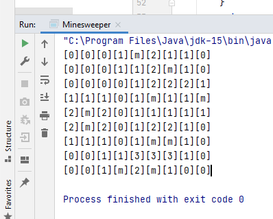
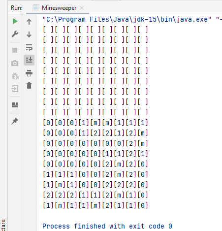
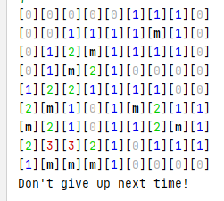
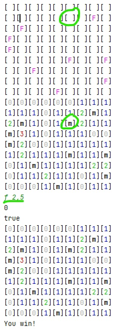
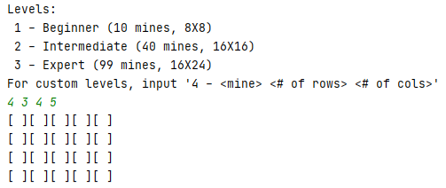
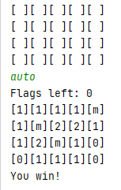
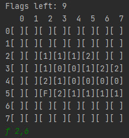
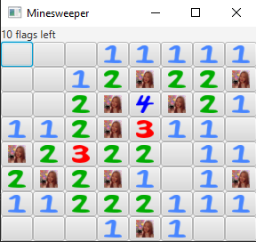

A Timeline of cmdline-minesweeper

First run successful run! Right now the progam is able to generate a field with all the mines and numbers.

Top is the what the game displays as its current state (none of the blocks are revealed). Bottom is the actual content of the block.

Color with ANSI values (had to change the color scheme a little)

How to win the game: all the mines are flagged! In the first part, I had one flag left. When I flagged the remaining mine, I won the game.
Here is a gif of what the gameplay is like as of now:


Made enum classes for each of the levels in Minesweeper with another constructor for custom boards.

Adding override commands like this autoplay (created mainly for testing purposes)

Rows and cols for easier gameplay

Working on a GUI!